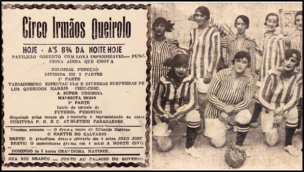
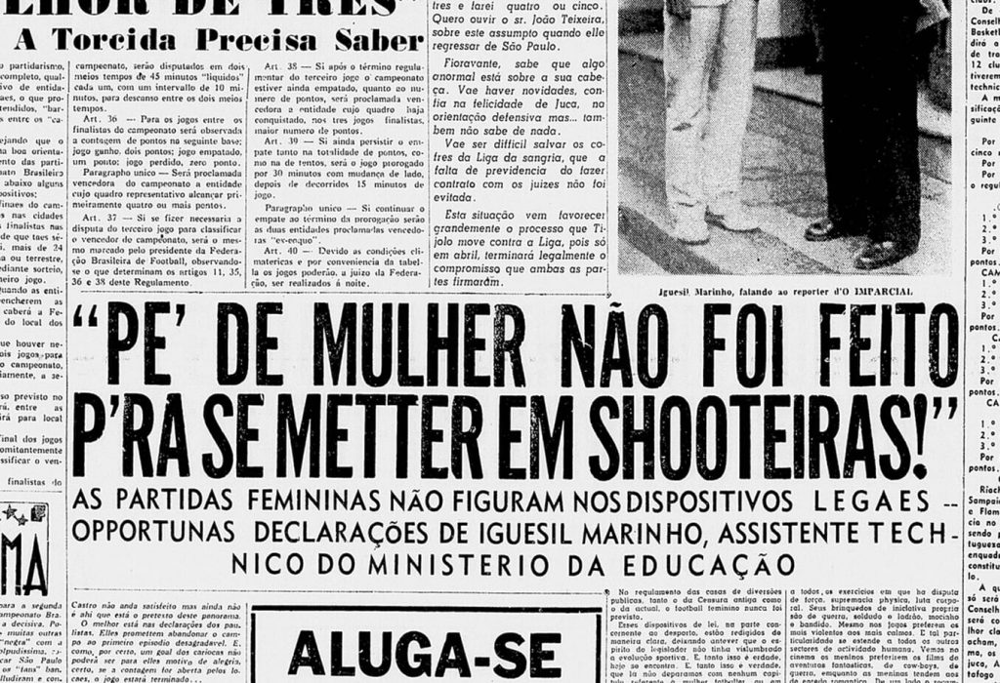

show de comédia (1920 - 1940)
As primeiras referências de partidas de futebol disputadas por mulheres surgiram nos anos 20. Os registros de jornais mostram a prática, ainda de forma muito tímida, no Rio de Janeiro, São Paulo e Rio Grande do Norte. Pode parecer piada, mas o circo traz algumas das primeiras referências do uso das palavras "futebol feminino". Era tratado como uma performance, um show. Não uma partida. Observe na imagem ao lado um bilhete de ingresso para assistir ao "espetáculo" de um circo.
proibição (1941 - 1979)

Até a década de 40, o futebol entre mulheres era longe de clubes ou grandes ligas. O que se sabia era de prática em periferias.
Não há registros de uma seleção. Apesar de ainda não ser proibida, a modalidade era considerada violenta e ideal apenas para homens.
Em 1940, o cenário ameaçou mudança. Foi quando houve jogos entre mulheres no Pacaembu, por exemplo. Em vez de fomentar a prática, essa visibilidade gerou revolta em parte da sociedade.
As notícias sobre mulheres jogando futebol provocaram esforços da opinião pública e autoridades da época para a proibição.
A primeira proibição ocorreu através de um processo de regulamentação do esporte no Brasil.
Criou-se o CND (Conselho Nacional de Desportos). Na época, sob a alçada do Ministério da Educação.
Em 1941, se debatia muito profissionalização e amadorismo. Ainda de forma rasa. Foi assim que a temática dos esportes femininos se tornou uma demanda do CND.
Foi então instituído um decreto-lei (3199, art 54). O texto trazia de forma mais geral que as mulheres não deveriam praticar esportes que não fossem adequados a sua natureza. Apesar de não ser citado nominalmente, o futebol se enquadrava.

Léa Campos
- Primeira árbitra oficial de futebol;
- Foi presa pelo menos 15 vezes durante a proibição.
Lei revogada e a regulamentação (1979)
Apenas no fim da década de 70 foi revogada a lei que proibia as mulheres de jogarem futebol. É o início de uma nova jornada para a modalidade entre as mulheres. O fim da proibição, no entanto, não muda tudo da água para o vinho. O futebol feminino não recebe estímulo de clubes e federações. Ainda não foi regulamentado e segue enfrentando proibições pelo país. Apenas em 1983 a modalidade foi regulamentada. Com isso, foi permitido que se pudesse competir, criar calendários, utilizar estádios, ensinar nas escolas. Clubes como o Radar e Saad surgem como pioneiros no profissionalismo. Eram alguns dos times competitivos da época.